- Introduction
- Tracking a Robot
- Filter Order
- Evaluating Filter Order
- Exercise: State Variable Design
- Detecting and Rejecting Bad Measurement
Designing Kalman Filters
충북대학교 지능로봇공학과 문성태 교수
Contents
- Evaluating Filter Performance
- Control Inputs
- Sensor Fusion
- Nonstationary Processes
- Tracking a Ball
- Tracking a Ball in Air
From Textbook Problems to Real Problems
- 지금까지: 몇 줄의 코드로 쉽게 풀리는 교과서형 문제, 실제 문제는 이보다 훨씬 복잡
- 이번 내용: 2D 로봇 추적에서 시작해 센서 추가, 제어 입력, 필터 성능 평가 방법까지 확장
- 한계: 실제 세계는 비선형, Kalman filter 는 선형, 약한 비선형은 견디지만 항상 통하지는 않음
핵심: 실제 문제의 필터 설계와 성능 평가, 선형 필터가 통하는 경우와 실패하는 경우의 구분
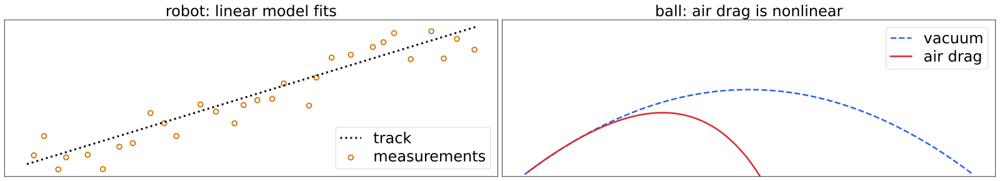
Robot in a 2D Field
- 상황: 들판이나 창고 같은 2D 공간에서 직선으로 이동하는 로봇 추적
- 센서: 매 시각 t 마다 잡음 섞인 위치 (x, y) 를 cm 단위로 출력, 필터 상태는 m 단위
- 설계 순서: 상태 변수, F, Q, B, H, R, 초기 조건을 차례로 정한 뒤 필터 구현
핵심: 1 차원 개 추적과 같은 구조, 측정과 상태가 2 차원으로 늘어난 문제
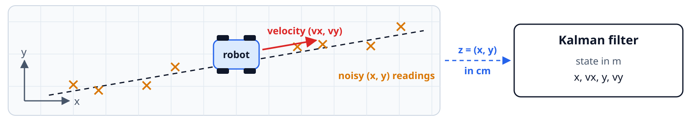
Simulating the Position Sensor
- 초기 위치, 속도, 잡음 표준편차로 센서를 만들고 read() 를 부를 때마다 한 단계 이동 후 측정 반환
- 측정 50 개가 기울기 1/2 의 직선 위에 퍼짐, 속도 (2, 1) 과 일치하고 시작점도 (6, 4) 근처
- 아직 교과서형 데이터, 실제 세계의 복잡한 거동은 이후 예제에서 차례로 추가
- 조건: pos = (4, 3), vel = (2, 1), noise_std = 1, 측정 50 개
class PosSensor(object): def __init__(self, pos=(0, 0), vel=(0, 0), noise_std=1.): self.vel = vel self.noise_std = noise_std self.pos = [pos[0], pos[1]] def read(self): self.pos[0] += self.vel[0] self.pos[1] += self.vel[1] return [self.pos[0] + randn() * self.noise_std, self.pos[1] + randn() * self.noise_std] pos, vel = (4, 3), (2, 1) sensor = PosSensor(pos, vel, noise_std=1) ps = np.array([sensor.read() for _ in range(50)]) plots.plot_measurements(ps[:, 0], ps[:, 1]);
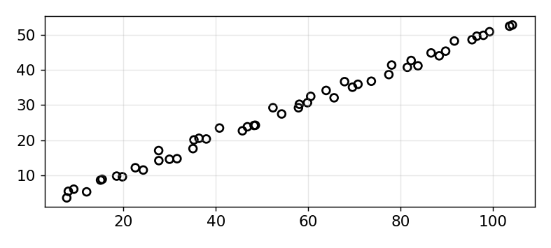
Choose the State Variables
- 관측 변수: 센서가 주는 x, y 두 값
- 숨은 변수: 속도, 고정 주기 측정이면 연속 측정의 차이가 곧 속도
- 순서: 위치와 속도를 이웃하게 두면 x 와 의 공분산이 P 의 같은 블록에 위치
- 검증: 필터는 주어진 모델을 그대로 실행, 숨은 변수 결과는 반드시 시험으로 확인
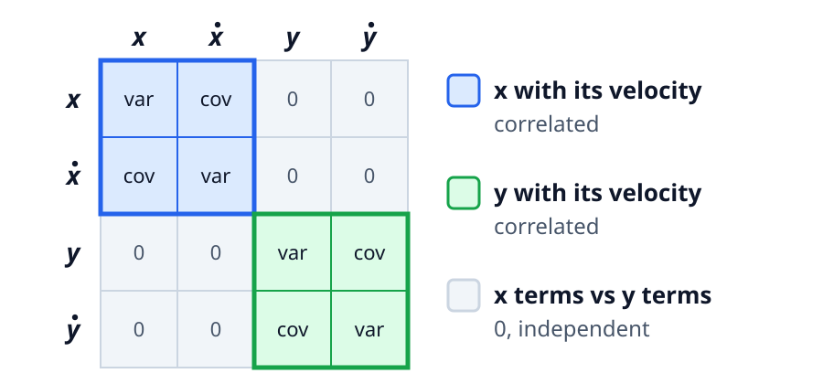
핵심: 적절한 상태 변수 선택이 필터 성능을 좌우, 숨은 변수의 물리적 의미를 먼저 생각
Design F and Q
8.2.2 State transition F
- 이전 상태에 F 를 곱해 다음 상태 계산
- 행과 열의 배치는 상태 변수 순서를 그대로 따름
8.2.3 Process noise Q
- discrete white noise, 한 주기 동안 잡음 일정 가정
- x, y 잡음은 독립, q 를 block_diag 로 배치
- 분산 하나로 단계 사이 모델 변화량 지정
핵심: x 와 y 사이 공분산은 0, 위치와 속도 사이만 상관이 있는 블록 대각 구조
Design B, H, R, and Initial Conditions
| Design | 의미 | |
|---|---|---|
| 8.2.4 B | 아직 제어 입력이 없음, 기본값 0 을 그대로 사용 | |
| 8.2.5 H | (2×1) = (2×4)(4×1) 로 크기 결정, 상태 m 를 측정 cm 로 변환 | |
| 8.2.6 R | x, y 잡음은 서로 독립인 white Gaussian, σ = 10 cm | |
| 8.2.7 x, P | 위치 (0, 0), 속도 (0, 0) 은 추측값이므로 P 를 크게 |
핵심: 행렬 크기가 맞지 않으면 설계를 다시 확인, 차원 분석이 설계의 길잡이
Implement the Filter
- 설계한 행렬을 tracker1() 로 묶고 직선으로 이동하는 로봇의 cm 측정 zs 30 개를 batch_filter 로 처리
- 필터 출력(파란 선)이 잡음 섞인 측정 위를 매끄럽게 따라감, 측정은 cm 이므로 100 으로 나눠 m 로 표시
- 조건: zs: PosSensor((0, 0), (60, 30), noise_std=10) 의 측정, R_std = 10 cm, Q_std = 0.04 m, dt = 1 s
def tracker1(): tracker = KalmanFilter(dim_x=4, dim_z=2) dt = 1.0 # time step tracker.F = np.array([[1, dt, 0, 0], [0, 1, 0, 0], [0, 0, 1, dt], [0, 0, 0, 1]]) tracker.H = np.array([[100, 0, 0, 0], # m to cm [0, 0, 100, 0]]) tracker.R = np.eye(2) * R_std**2 q = Q_discrete_white_noise(dim=2, dt=dt, var=Q_std**2) tracker.Q = block_diag(q, q) tracker.x = np.array([[0, 0, 0, 0]]).T tracker.P = np.eye(4) * 500. return tracker robot_tracker = tracker1() mu, cov, _, _ = robot_tracker.batch_filter(zs) plots.plot_filter(mu[:, 0], mu[:, 2]) plots.plot_measurements(zs[:, 0]/100, zs[:, 1]/100); plt.legend(loc=2);
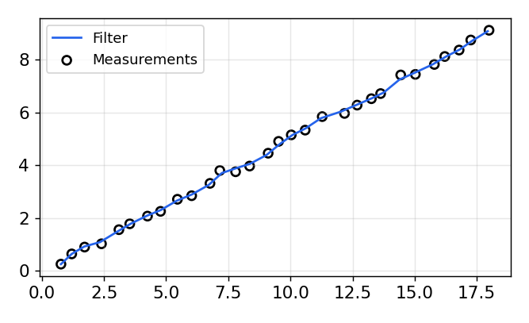
Covariance Ellipses
- 각 단계의 x, y 공분산으로 3σ 공분산 타원(초록)을 그리고 최종 P 의 대각과 x, 블록을 출력
- 처음 몇 단계를 확대, 타원이 기울지 않은 원 모양, x 와 y 는 서로 독립이고 두 축의 측정 잡음이 같기 때문
- P 대각은 x, , y, ẏ 의 분산, 위치와 속도 블록만 값이 있고 x 와 ẏ 처럼 독립인 항의 블록은 0
- 조건: tracker1() 의 결과 mu, cov, std = 3
for x, P in zip(mu, cov): # covariance of x and y cov = np.array([[P[0, 0], P[2, 0]], [P[0, 2], P[2, 2]]]) mean = (x[0, 0], x[2, 0]) plot_covariance_ellipse(mean, cov=cov, fc='g', std=3, alpha=0.5, axis_equal=False) plots.plot_filter(mu[:, 0], mu[:, 2]) plt.gca().set_aspect('equal'); plt.xlim(-1, 7); plt.ylim(-0.5, 3.5); P = robot_tracker.P print(np.diag(P).round(4)) print(P[0:2, 0:2].round(4))
[0.0059 0.0029 0.0059 0.0029]
[[0.0059 0.0026]
[0.0026 0.0029]]
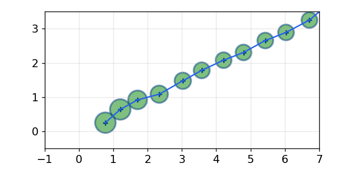
Filter Order
- 차수: 시스템을 정확히 모델링하는 데 필요한 미분의 개수, 다항식의 차수와 같음
- 0, 1, 2 차: 변하지 않는 시스템(예: 건물 높이), constant velocity 모델, constant acceleration 모델
질문: 등속 물체도 속도가 조금씩 흔들림, 가속도까지 추적하는 2 차 필터가 더 나은지
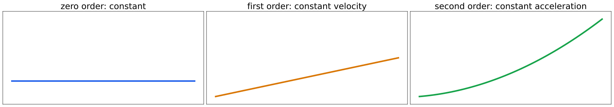
Constant Velocity Object
- 매 단계 속도에 작은 잡음을 더하는 등속 물체와 표준편차 1 m 의 위치 센서를 시뮬레이션
- 궤적(검은 점선)이 완전한 직선이 아님, 길을 걷는 사람이나 바람에 흔들리는 항공기에 해당하는 등속 시스템
- 조건: x0 = 0, vel = 1 m/s, 속도 잡음 0.06, 측정 잡음 1 m, 50 단계, seed 124
class ConstantVelocityObject(object): def __init__(self, x0=0, vel=1., noise_scale=0.06): self.x, self.vel, self.noise_scale = x0, vel, noise_scale def update(self): self.vel += randn() * self.noise_scale self.x += self.vel return (self.x, self.vel) def sense(x, noise_scale=1.): return x[0] + randn()*noise_scale np.random.seed(124) obj = ConstantVelocityObject() xs, zs = [], [] for i in range(50): x = obj.update() xs.append(x) zs.append(sense(x)) xs = np.asarray(xs) plots.plot_track(xs[:, 0]) plots.plot_measurements(range(len(zs)), zs) plt.legend(loc='best');
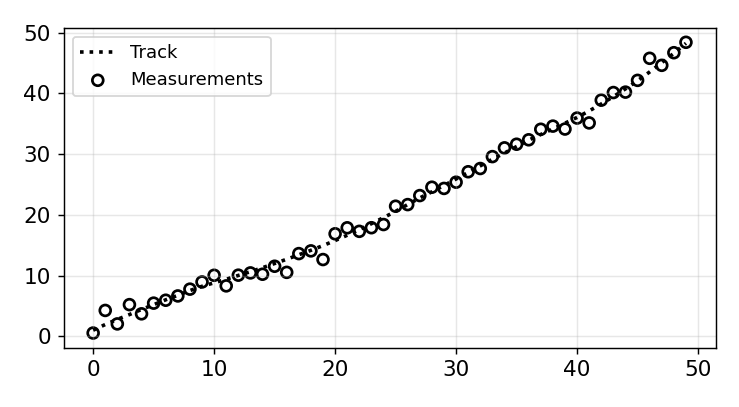
Zero, First, and Second Order Kalman Filters
8.3.1 Zero order
- 위치만 추적, 다음 위치 = 현재 위치
8.3.2 First order
- 위치와 속도, 등속 모델
8.3.3 Second order
- 위치, 속도, 가속도, 등가속 모델
핵심: 세 필터는 상태 크기와 F, H 만 다르고 센서는 모두 위치만 측정, 같은 측정에 그대로 적용
First Order Filter
- 잔차 = 실제 상태 - 추정을 P 대각의 σ 와 비교, Gaussian 이면 약 68% 가 ±1σ, 99% 가 ±3σ 안, 실제 센서는 5σ 까지 고려
- 1 차 필터는 위치(왼쪽 아래), 속도(오른쪽 아래) 잔차가 모두 0 중심으로 노란 ±1σ 띠 안에 머묾, 발산하지 않음
- 조건: R = 1, Q = 0.03, vel = 0.5 m/s, 50 단계, 위: 필터 출력, 아래: 잔차와 ±1σ
R, Q = 1, 0.03 np.random.seed(124) xs, zs = simulate_system(Q=Q, count=50) kf = FirstOrderKF(R, Q, dt=1) data1 = filter_data(kf, zs) plt.subplot(211) plots.plot_kf_output(xs, data1.x, data1.z) plt.subplot(223) plot_residuals(xs[:, 0], data1, 0, 'position residuals', 'm') plt.subplot(224) plot_residuals(xs[:, 1], data1, 1, 'velocity residuals', 'm/s')
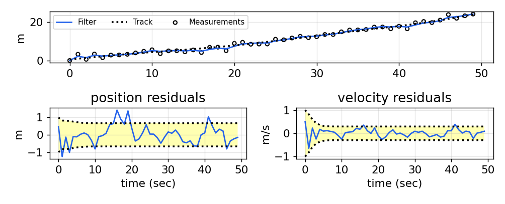
Zero Order Filter
- 같은 데이터에 위치만 추적하는 0 차 필터 적용, 매 예측이 위치 변화가 없다고 가정해 추정이 실제 위치를 계속 뒤따라감
- 잔차가 몇 초 만에 ±3σ 밖으로 발산하는데 P 는 점점 작아져 성능이 좋다고 보고, 모델이 틀린 줄 모르는 smug filter
- 상수 가정은 샘플 사이에서만 성립, 출력은 시간에 따라 변할 수 있음, P 만 믿으면 안 됨
- 조건: R = 1, Q = 0.03, 위: 필터 출력, 아래: 위치 잔차와 ±3σ
kf0 = ZeroOrderKF(R, Q) data0 = filter_data(kf0, zs) plt.subplot(211) plots.plot_kf_output(xs, data0.x, data0.z) plt.subplot(212) plot_residuals(xs[:, 0], data0, 0, title='position residuals (3 sigma)', y_label='m', stds=3)
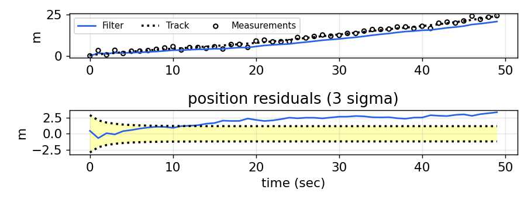
Second Order Filter
- 같은 데이터에 가속도까지 추적하는 2 차 필터 적용, 잔차를 1 차 필터(점선)와 비교, 노란 띠는 2 차 필터의 ±1σ
- 위치 잔차(왼쪽 아래)는 이론 한계 안이지만 속도 잔차(오른쪽 아래)가 1 차보다 훨씬 큼, 측정 잡음을 가속도로 오인
- 없는 가속도가 매 예측마다 속도 추정에 더해져 잡음을 따라가고 곳곳에서 overshoot
- 조건: R = 1, Q = 0.03, 같은 측정 50 개
kf2 = SecondOrderKF(R, Q, dt=1) data2 = filter_data(kf2, zs) plt.subplot(211) plots.plot_kf_output(xs, data2.x, data2.z) for col, unit in ((0, 'm'), (1, 'm/s')): res2 = xs[:, col] - data2.x[:, col] res1 = xs[:, col] - data1.x[:, col] plt.subplot(223 + col) plt.plot(res1, ls='--', label='order 1') plt.plot(res2, label='order 2') plots.plot_residual_limits(data2.P[:, col, col]) plots.set_labels(y=unit) plt.legend();
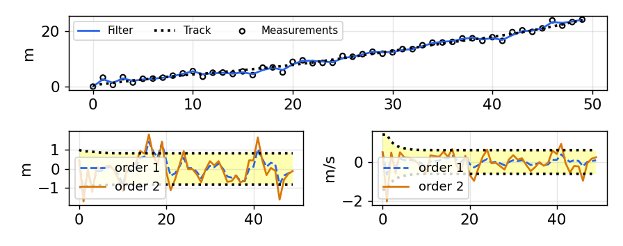
Second Order Filter with Q = 0
- 2 차 필터가 속도 변화를 모델링하므로 process noise 를 0 으로 둔 경우를 500 단계로 확인
- 처음엔 실제 궤적에 수렴하는 듯 보이지만 100 번째 갱신 전후로 이론 성능을 크게 벗어나 발산
- Q = 0 은 모델이 완벽하다는 뜻, 측정이 무시되어 불완전한 실제 거동에 적응하지 못함
- 조건: SecondOrderKF(R, 0), R = 1, 시뮬레이션 Q = 0.03, 500 단계, seed 25944
np.random.seed(25944) xs500, zs500 = simulate_system(Q=Q, count=500) kf2 = SecondOrderKF(R, 0, dt=1) data500 = filter_data(kf2, zs500) plt.subplot(211) plots.plot_kf_output(xs500, data500.x, data500.z) plt.subplot(212) plot_residuals(xs500[:, 0], data500, 0, 'second order position residuals', 'm')
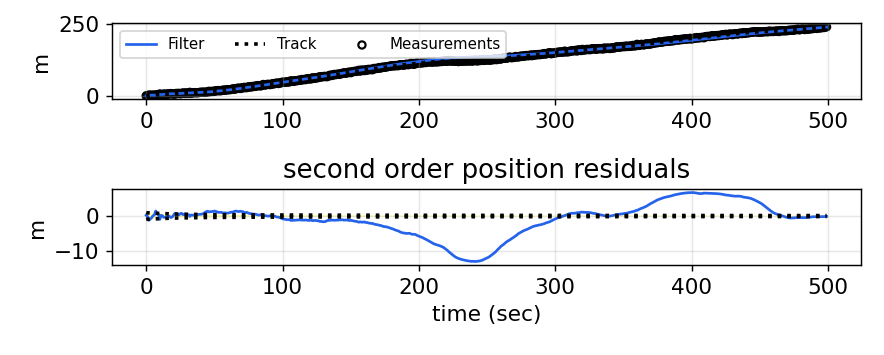
Matching the Order of the System
- 데이터 맞춤: 두 점을 지나는 직선은 유일하고 최적, 2 차 곡선은 무수히 많아 최적이 아니고 발산 가능
- 필터 차수: 물리 시스템보다 높은 차수의 필터도 같은 문제, 시스템 차수에 맞출 것
- 예: 냉동고 온도계는 0 차, 직진 차량은 1 차, 회전, 가감속하는 차량은 2 차가 유리
핵심: 낮은 차수 필터도 process noise 를 키우고 샘플 주기를 짧게 하면 높은 차수 거동 추적 가능
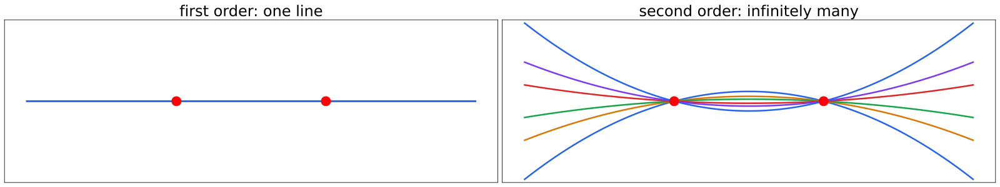
Accelerating Object
- 매 단계 가속도에 잡음을 더하는 ConstantAccelerationObject 로 등가속 시스템을 만들고 2 차 필터로 추적
- 시스템과 차수가 맞는 필터, 위치 잔차가 이론 한계 안에 머묾
- 조건: R = 6, Q = 0.02, 초기 vel = 1, acc = 0.1, 80 단계, seed 124, 위: 필터 출력, 아래: 위치 잔차
R, Q = 6., 0.02 np.random.seed(124) xs, zs = simulate_acc_system(R=R, Q=Q, count=80) kf2 = SecondOrderKF(R, Q, dt=1) data2 = filter_data(kf2, zs) plt.subplot(211) plots.plot_kf_output(xs, data2.x, data2.z) plt.subplot(212) plot_residuals(xs[:, 0], data2, 0, 'second order position residuals', 'm')
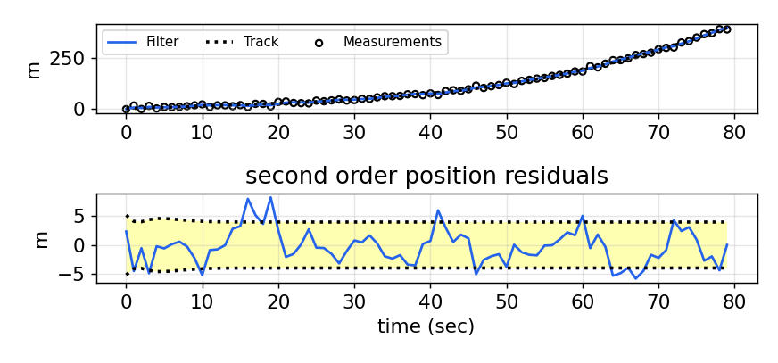
Lower Order Filter with More Process Noise
- 같은 등가속 데이터를 Q 를 키운 1 차 필터로 추적, 가속도를 process noise 로 취급
- Q × 10 (왼쪽)은 준최적이지만 발산하지 않음, Q × 10000 (오른쪽)은 측정을 지나치게 신뢰해 잡음을 그대로 따라감
- 추가할 Q 의 크기는 정확한 답이 없음, 대표 데이터로 실험해 결정
- 조건: R = 6, Q = 0.02, 같은 측정 80 개, 그래프는 위치 잔차와 ±1σ
for i, scale in enumerate((10, 10000)): kf = FirstOrderKF(R, Q * scale, dt=1) data = filter_data(kf, zs) plt.subplot(1, 2, i + 1) plot_residuals(xs[:, 0], data, 0, 'Q x {}'.format(scale), 'm')
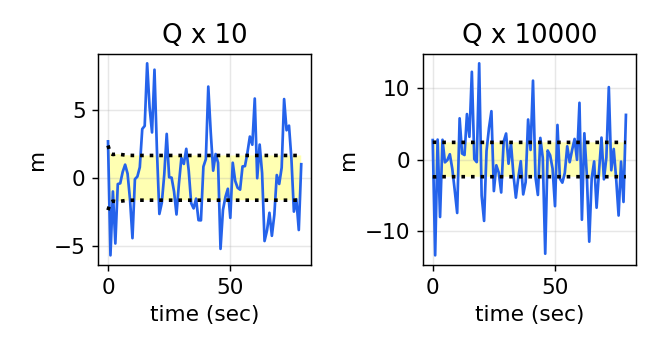
Exercise: State Variable Design
- 과제: 2D 로봇의 상태를 [x y ẏ] 순서로 바꾼 필터 설계
- 영향: 상태 순서가 바뀌면 F, Q, H, P 의 행과 열 배치도 함께 바뀜, 측정 z 가 그대로이므로 R 은 동일
- 선택 기준: P 에서 어떤 상관관계를 쉽게 보고 싶은지에 따라 순서 결정
F
Q
H
방법: 상태 변수를 행렬의 행과 열에 나란히 적어 보면 각 항의 짝이 바로 보임, x 와 y 가 섞인 항은 0
Exercise: State Variable Design
- 바꾼 순서에 맞춰 F, H, Q 를 다시 배치, Q 는 1 차원 q 의 항을 해당 위치로 복사
- 필터 출력(파란 선)이 측정을 따라 직선 궤적을 추정, 행렬 배치만 달라지고 결과는 동일
- 조건: zs: PosSensor((0, 0), (60, 15), noise_std=10) 의 cm 측정 30 개, R_std = 10 cm, Q_std = 0.04 m, dt = 1 s
tracker = KalmanFilter(dim_x=4, dim_z=2) tracker.F = np.array([[1, 0, dt, 0], [0, 1, 0, dt], [0, 0, 1, 0], [0, 0, 0, 1]]) tracker.H = np.array([[100, 0, 0, 0], # m to cm [0, 100, 0, 0]]) tracker.R = np.eye(2) * R_std**2 q = Q_discrete_white_noise(dim=2, dt=dt, var=Q_std**2) tracker.Q[0, 0] = tracker.Q[1, 1] = q[0, 0] tracker.Q[2, 2] = tracker.Q[3, 3] = q[1, 1] tracker.Q[0, 2] = tracker.Q[2, 0] = q[0, 1] tracker.Q[1, 3] = tracker.Q[3, 1] = q[0, 1] tracker.x = np.array([[0, 0, 0, 0]]).T tracker.P = np.eye(4) * 500. mu, _, _, _ = tracker.batch_filter(zs) plots.plot_filter(mu[:, 0], mu[:, 1]) plots.plot_measurements(zs[:, 0]/100, zs[:, 1]/100); plt.legend(loc=2);
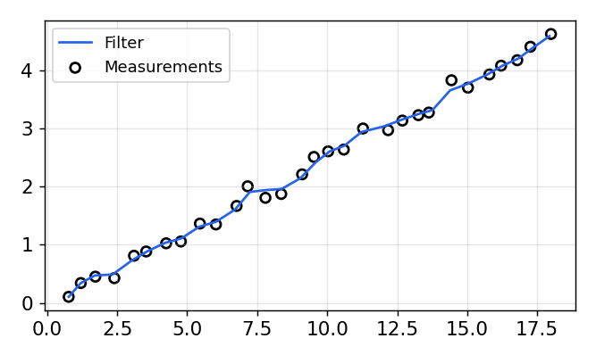
A Bad Measurement
- 약 200 km/h 로 101 번 추적한 항공기 필터 kf 에 현재 위치의 두 배인 측정으로 update
- 추정이 3.4 km 이동, prior 와 측정의 거리는 7.1 km, Kalman filter 자체에는 나쁜 측정을 거르는 기능이 없음
- 1, 2, 3σ 타원(P)에 비해 측정(x 표시)이 99% 영역을 크게 벗어남
- 조건: kf: 2D 등속 필터, R = diag(0.03, 0.21) km^2, Q 의 속도 항 0.003, 단위 km, dt = 1 s
p0 = kf.x[0:2] kf.predict() prior = kf.x z = kf.x[0:2]*2 kf.update(z) p1 = kf.x[0:2] x, P = kf.x[0:2], kf.P[0:2, 0:2] y = np.abs(z - np.dot(kf.H, prior)) # error from prior shift = np.linalg.norm(p1 - prior[:2]) print('estimate shift: {:.1f} km'.format(shift)) print('distance from prior: {:.1f} km'.format(np.linalg.norm(y))) plot_covariance_ellipse(x, P, std=[1, 2, 3]) plt.scatter(z[0], z[1], marker='x', s=200) plt.ylim(5.9, 10.5);
estimate shift: 3.4 km
distance from prior: 7.1 km
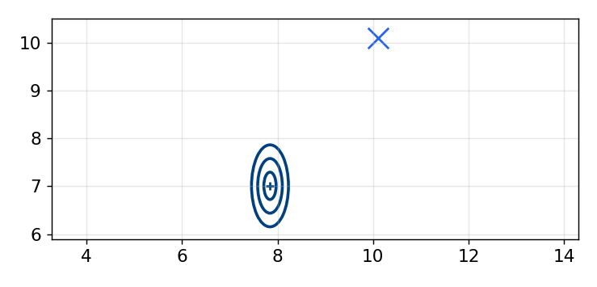
Rectangular Gate
- gate: 측정이 좋은지 나쁜지 판정하는 식, 실제 측정은 순수 Gaussian 이 아니므로 3σ 대신 4σ 사용
- 잔차를 x, y 각각의 σ 와 비교, 나쁜 측정은 39σ, 18σ 떨어져 버려짐
- if 문 두 조건은 타원을 감싼 사각형 영역, 3σ 사각형(점선) 안이지만 3σ 타원 밖인 측정도 통과
- 조건: GATE_LIMIT = 4, 점 (8.08, 7.7) 은 3σ 경계, (8.2, 7.65) 는 3σ 타원 밖
GATE_LIMIT = 4. std_x = np.sqrt(P[0, 0]) std_y = np.sqrt(P[1, 1]) y = kf.residual_of(z)[:, 0] if y[0] > GATE_LIMIT * std_x or y[1] > GATE_LIMIT * std_y: print('discarding measurement, error is {:.0f} std, {:.0f} std' .format(y[0]/std_x, y[1]/std_y)) plot_covariance_ellipse(x, P, std=[1, 2, 3]) plt.ylim(6.0, 8.0); plt.gca().add_patch(plt.Rectangle( (x[0, 0] - 3*std_x, x[1, 0] - 3*std_y), 6*std_x, 6*std_y, fill=False, ls='--', lw=2)) plt.scatter(8.08, 7.7, marker='x', s=150) plt.scatter(8.2, 7.65, marker='x', s=150);
discarding measurement, error is 39 std, 18 std
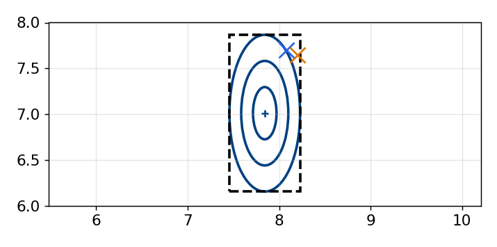
Mahalanobis Distance
- 점과 분포 사이의 거리를 표준편차 단위의 스칼라로 계산, S 가 단위행렬이면 Euclidean 거리, 대각이면 각 축을 σ 로 나눈 거리
- 나쁜 측정은 20.6, 3σ 경계의 점은 3.0, 타원 밖의 점은 3.6, 사각형과 달리 타원 모양을 그대로 반영
- 조건: 갱신 후 x, P 사용, 3 보다 크면 3σ 타원 밖
print('distance of z = {:.1f}'.format(mahalanobis(x=z, mean=x, cov=P))) plot_covariance_ellipse(x, P, std=[1, 2, 3]) plt.ylim(6.0, 8.0); for pt, dx in (([8.08, 7.7], -.45), ([8.2, 7.65], .1)): d = mahalanobis(x=pt, mean=x, cov=P) plt.scatter(pt[0], pt[1], marker='x', s=150) plt.text(pt[0] + dx, pt[1], '{:.1f}'.format(d))
distance of z = 20.6
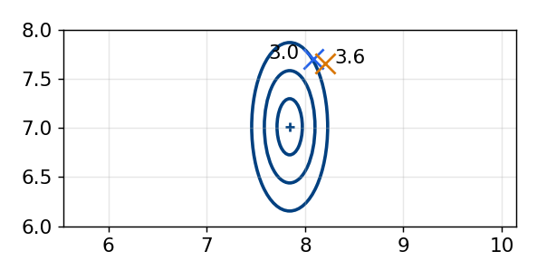
Gate Shapes
- Rectangular: 계산이 가장 싸지만 타원 밖 모서리 영역도 통과, 5 차원에서 나쁜 측정 통과 확률이 약 2 배
- Ellipsoidal: Mahalanobis 거리로 판정, 고차원에서 계산 비용 증가
- Maneuver: 현재 속도와 기동 능력으로 이동 가능한 영역만 허용, 전투기는 원뿔, 차량은 부채꼴, 배는 좁은 부채꼴
- Two gates: 큰 사각형 gate 로 명백한 오류를 먼저 버리고 통과한 측정만 Mahalanobis 거리 계산
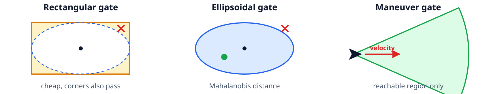
Data Association
- 문제: 레이더 sweep 마다 여러 신호, 어느 측정이 어느 항공기 track 인지 결정
- 조합 폭발: 측정 5 개, 다음 sweep 6 개면 30 개 조합에 새 track 6 개, 몇 sweep 만에 수십억 개 후보
- 가지치기: Z 자 track, 10000 km/h 를 요구하는 track 은 확률이 매우 낮음, 이런 후보를 적극 제거
- 단일 물체: gate 를 통과하지 못한 측정은 버리고 update 생략, predict 를 연속 호출해도 무방
- gate 크기: 이론은 3σ, 실제는 데이터로 실험해 결정, 예: 4.5σ, 5 ~ 6σ
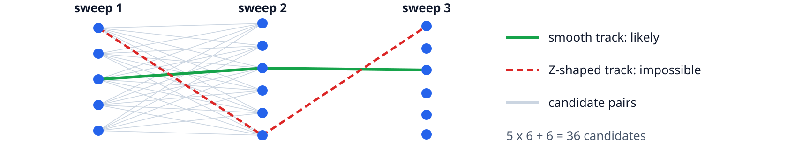
Evaluating Filter Performance
- 실제 설계: 센서와 모델이 불완전, 시험 데이터로 행렬 조정
- 최적 필터: 추정 오차의 평균이 0, 오차의 공분산이 P 와 일치
- NEES: 참값을 아는 시뮬레이션에서 오차를 P 로 정규화한 제곱
- 판정: chi-square 분포를 따르므로 평균 NEES 가 상태 차원 n 보다 작으면 통과
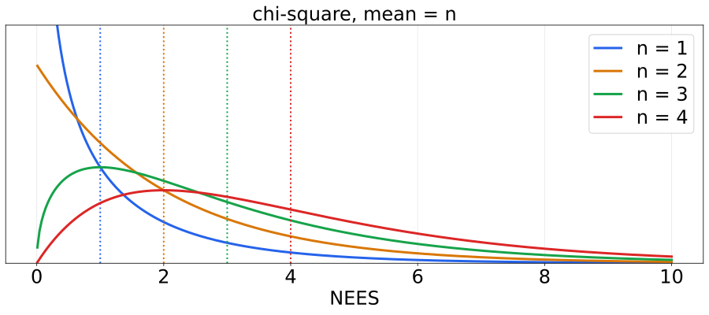
핵심: 같은 오차에서 P 가 작을수록 NEES 가 커짐, 필터가 자기 오차를 과소평가하는지 검사
NEES
- 등가속 시스템을 2 차 필터로 추적한 결과의 단계별 NEES 와 그 평균(점선)을 계산
- 평균 NEES 가 상태 차원 3 보다 작아 통과, 실행 중에도 계산 가능하지만 참값을 아는 시뮬레이션에서만 사용 가능
- 조건: R = 6, Q = 0.02, 80 단계, dim_x = 3
def NEES(xs, est_xs, Ps): est_err = xs - est_xs err = [] for x, p in zip(est_err, Ps): err.append(np.dot(x.T, inv(p)).dot(x)) return err R, Q = 6., 0.02 xs, zs = simulate_acc_system(R=R, Q=Q, count=80) kf2 = SecondOrderKF(R, Q, dt=1) est_xs, ps, _, _ = kf2.batch_filter(zs) nees = NEES(xs, est_xs, ps) eps = np.mean(nees) print('mean NEES is: {:.3f}'.format(eps)) print('passed' if eps < kf2.dim_x else 'failed') plt.plot(nees) plt.axhline(eps, ls='--', color='k');
mean NEES is: 1.398
passed
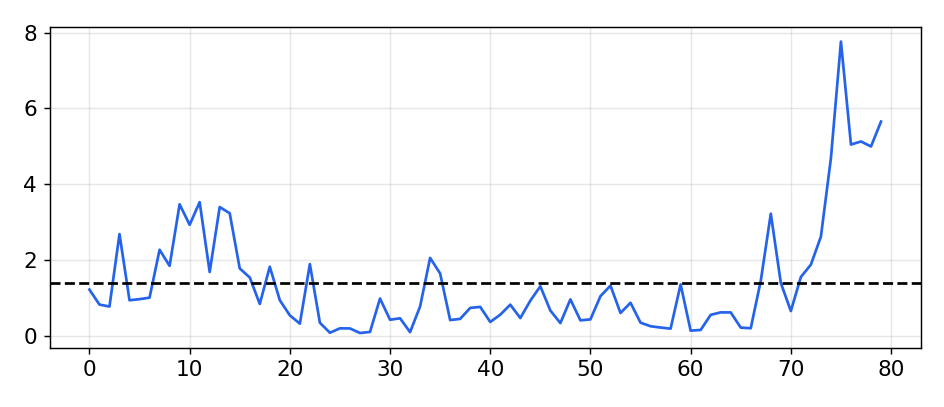
Likelihood Function
- likelihood: 현재 상태에서 그 측정이 나올 가능성, 낮으면 Gaussian 잡음, 선형 거동 가정 중 무엇인가 틀림
- 큰 측정 4 개에서 likelihood 가 0, log-likelihood 는 급락, 끝에서는 필터가 새 측정 쪽으로 옮겨가 잔차가 작아져 다시 회복
- 조건: R = 0.05, Q = 0.02, 50 단계, 끝에서 5 ~ 2 번째 측정을 100, 200, 200, 200 으로 교체
R, Q = .05, 0.02 xs, zs = simulate_acc_system(R=R, Q=Q, count=50) zs[-5:-1] = [100, 200, 200, 200] # bad measurements, bad! kf = SecondOrderKF(R, Q, dt=1, P=1) s = Saver(kf) kf.batch_filter(zs, saver=s); plt.subplot(211) plt.plot(s.likelihood) plots.set_labels(y='likelihood') plt.subplot(212) plt.plot(s.log_likelihood) plots.set_labels(y='log-likelihood');
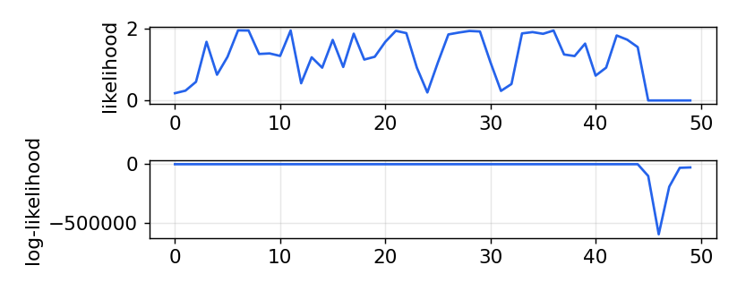
Control Inputs
- 아이디어: 물체가 이전처럼 계속 움직인다고 가정하는 대신 알고 있는 제어 입력으로 다음 상태 예측
- u, B: u 는 제어 입력 벡터, B 는 제어 입력을 상태 변화로 바꾸는 행렬
- 예: 상태 [x ] 인 로봇, 제어 입력은 명령 속도, 명령에 즉시 반응한다고 가정
- 실제: 보통 조향각, 가속도의 변화가 제어 입력, 비선형이 생김
핵심: Fx 는 위치만 가져오고 Bu 가 명령 속도에 의한 이동량과 새 속도를 채움
Commanded Velocity
- 명령 속도 1 m/s 를 제어 입력으로 predict 에 넣고 잡음 큰 위치 측정으로 update
- 측정 잡음이 커도 필터 출력이 제어 입력을 따라 매끄러운 직선, 제어 입력 외의 설계는 평소와 같음
- 조건: u = 1 m/s, dt = 1 s, R = 3, Q 분산 0.1, P = 10 I, 측정 99 개
dt, R = 1., 3. kf = KalmanFilter(dim_x=2, dim_z=1, dim_u=1) kf.P *= 10 kf.R *= R kf.Q = Q_discrete_white_noise(2, dt, 0.1) kf.F = np.array([[1., 0], [0., 0.]]) kf.B = np.array([[dt], [1.]]) kf.H = np.array([[1., 0]]) zs = [i + randn()*R for i in range(1, 100)] xs = [] cmd_velocity = np.array([[1.]]) for z in zs: kf.predict(u=cmd_velocity) kf.update(z) xs.append(kf.x[0]) plt.plot(xs, label='Kalman Filter') plots.plot_measurements(zs) plt.xlabel('time (s)'); plt.ylabel('distance (m)') plt.legend(loc=4);
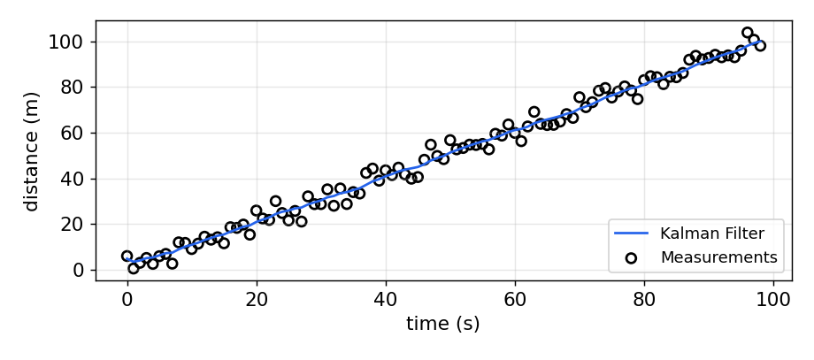
Sensor Fusion
- 상황: 레일 위 열차, 바퀴 회전수로 거리를 재는 wheel 센서와 위치를 보고하는 position 센서
- 원칙: 부정확한 센서의 정보도 버리지 않음, 항공기는 GPS, INS, Doppler radar 등을 융합
- 설계: 두 측정을 z 로 묶고 H 로 상태를 각 측정으로 변환, 바퀴 1 회전 = 2 m 면 첫 행이 0.5
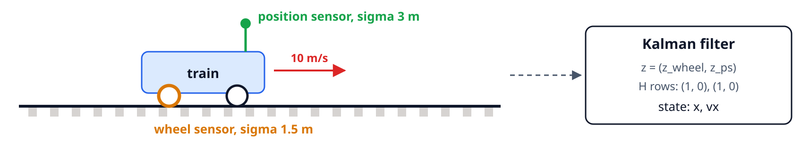
Wheel and Position Sensor
- wheel 센서(σ = 1.5 m)와 position 센서(σ = 3 m)의 측정을 두 행의 H 로 한 번에 update
- 필터 출력(파란 선)이 두 측정보다 매끄럽게 실제 이동을 따라감, Q 는 센서 융합과 무관하게 임의 설정
- 조건: 속도 10 m/s, dt = 0.1 s, 측정 99 쌍, P = 100 I, Q 분산 0.02, seed 1123
dt = 0.1 wheel_sigma, ps_sigma = 1.5, 3.0 kf = KalmanFilter(dim_x=2, dim_z=2) kf.F = array([[1., dt], [0., 1.]]) kf.H = array([[1., 0.], [1., 0.]]) kf.x = array([[0.], [1.]]) kf.Q *= array([[(dt**3)/3, (dt**2)/2], [(dt**2)/2, dt]]) * 0.02 kf.P *= 100 kf.R = np.diag([wheel_sigma**2, ps_sigma**2]) random.seed(1123) zs = np.array([[i + randn()*wheel_sigma, i + randn()*ps_sigma] for i in range(1, 100)]) mu, _, _, _ = kf.batch_filter(zs) ts = np.arange(0.1, 10, .1) plots.plot_measurements(ts, zs[:, 0], label='Wheel') plt.plot(ts, zs[:, 1], ls='--', label='Pos Sensor') plots.plot_filter(ts, mu[:, 0], label='Kalman filter') plt.legend(loc=4);
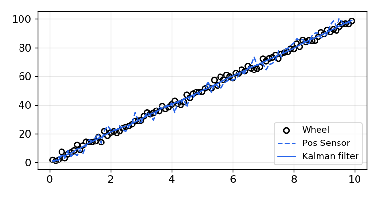
Two Radar Stations
- 상황: (100, 100) m 의 표적을 (50, 50), (150, 50) 의 두 레이더가 거리와 방위로 측정
- 초기: x, y 불확실성이 같아 원 모양(노랑)
- 1 번 레이더: 방위 σ = 0.5° 는 정확, 거리 σ = 3 m 는 부정확, 시선 방향으로 긴 타원(초록)
- 2 번 레이더: 시선이 1 번과 직교, 오차 방향이 서로 바뀌어 타원(파랑)이 훨씬 작아짐
- 의미: 공분산은 문제의 기하를 포함한 모든 정보를 반영, 위치 센서와 속도 센서의 조합에서도 같음
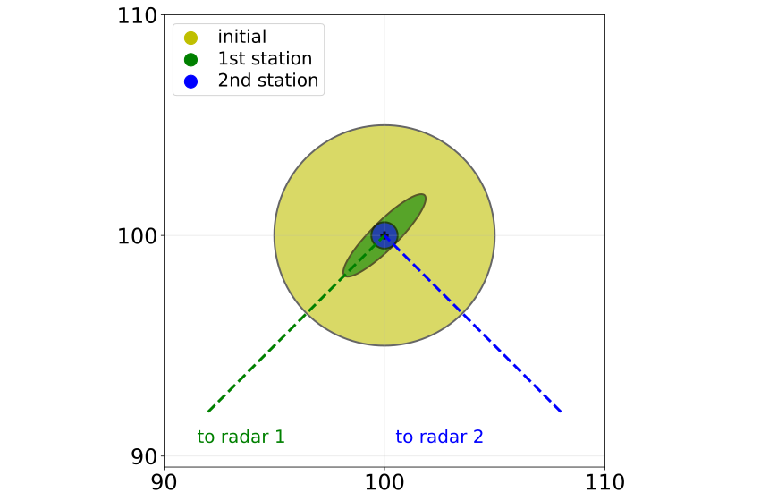
Exercise: Can you Filter GPS outputs?
- 상용 GPS 출력은 내부 Kalman filter 의 추정, 그 출력을 다시 필터의 측정으로 넣으면 좋아지는지 확인
- 그래프는 실제 궤적 대비 오차, 반복할수록 매끄러워지지만 궤적에서 벗어나고 지연이 생김
- 필터 출력은 시간 상관이라 Markov 가정 위반, 최적 해를 다시 필터링해 더 최적이 될 수 없음
- 조건: R = 5, Q = 0.02, 30 단계, seed 124, 이전 필터의 위치 추정을 다음 필터의 측정으로 사용
np.random.seed(124) R, Q = 5., 0.02 xs, zs = simulate_acc_system(R=R, Q=Q, count=30) kf0 = SecondOrderKF(R, Q, dt=1) kf1 = SecondOrderKF(R, Q, dt=1) kf2 = SecondOrderKF(R, Q, dt=1) # Filter measurements fxs0, ps0, _, _ = kf0.batch_filter(zs) # filter twice more, using the state as the input fxs1, ps1, _, _ = kf1.batch_filter(fxs0[:, 0]) fxs2, _, _, _ = kf2.batch_filter(fxs1[:, 0]) plots.plot_measurements(zs - xs[:, 0], label='measurement') for fx, name in ((fxs0, 'KF'), (fxs1, '1 iteration'), (fxs2, '2 iterations')): plt.plot(fx[:, 0] - xs[:, 0], label=name) plt.ylabel('error from track (m)'); plt.legend(loc=3, ncol=2);
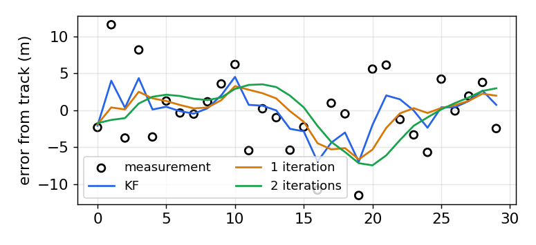
Exercise: Prove that the Position Sensor Improves the Filter
- 같은 융합 필터를 fusion_test(wheel_sigma, ps_sigma) 로 묶고 position 센서 잡음을 1e40 으로 키워 사실상 무시
- 참값 대비 오차의 표준편차가 융합한 경우 더 작음, 부정확한 센서도 정보를 더함
- 조건: wheel σ = 1.5 m, position σ = 3 m 또는 1e40, 같은 seed 의 측정, 참값 위치 = 단계 번호
nom = np.arange(1, 100) for ps_sigma, name in ((1.e40, 'wheel only'), (3.0, 'fusion')): s = fusion_test(1.5, ps_sigma) res = nom - s.x[:, 0, 0] plt.plot(res, label='{}: std {:.3f}'.format(name, np.std(res))) plt.ylim(-6, 6); plt.xlabel('step'); plt.ylabel('error (m)') plt.legend(loc=4);
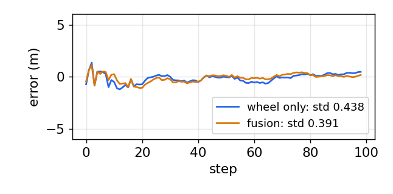
Nonstationary Processes
- 데이터 주기가 불규칙하면 Δt 에 의존하는 F = [[1, Δt], [0, 1]] 과 Q 를 측정마다 다시 계산한 뒤 predict, update
- 각 측정 시각의 추정을 그래프로 표시, 위치는 측정 1 ~ 5 m 를 따르고 속도는 약 1 m/s 로 유지
- 조건: (측정, 경과 시간) 5 쌍, Δt 0.9 ~ 1.23 s, P = 50 I, R = 1, q_var = 0.02
kf = KalmanFilter(dim_x=2, dim_z=1) kf.x = array([0., 1.]) kf.H = array([[1, 0]]) kf.P = np.eye(2) * 50 kf.R = np.eye(1) q_var = 0.02 # measurement tuple: (value, time) zs = [(1., 1.), (2., 1.1), (3., 0.9), (4.1, 1.23), (5.01, 0.97)] t, ts, xs = 0., [], [] for z, dt in zs: kf.F = array([[1, dt], [0, 1]]) kf.Q = Q_discrete_white_noise(dim=2, dt=dt, var=q_var) kf.predict() kf.update(z) t += dt ts.append(t); xs.append(kf.x.copy()) xs = np.array(xs) plt.plot(ts, xs[:, 0], 'o-', label='position (m)') plt.plot(ts, xs[:, 1], 's-', label='velocity (m/s)') plt.xlabel('time (s)'); plt.legend();
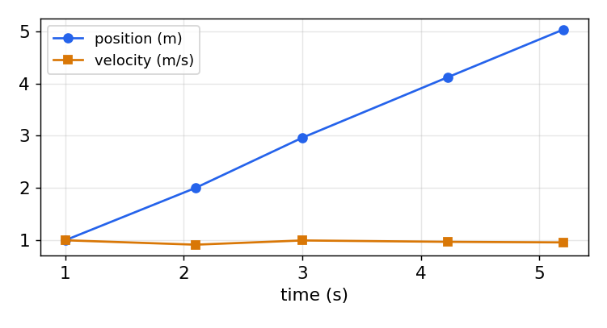
Different Data Rates
- 상황: position 센서 3 Hz, wheel 센서 7 Hz, 시각에 약간의 jitter, wheel 은 위치 대신 속도 측정
- 처리: 어느 센서든 데이터가 오면 지난 update 이후 경과 시간 Δt 로 F, Q 를 수정
- 측정별 H, R: position: , wheel:
핵심: 센서마다 H, R 을, 시간 간격마다 F, Q 를 바꾸는 것만으로 서로 다른 주기의 센서 융합 가능
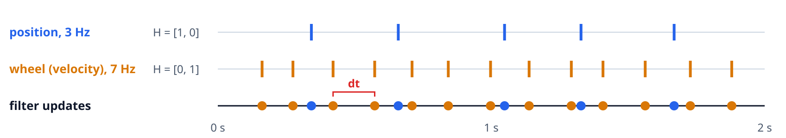
Fusing Sensors at Different Rates
- 두 센서 데이터를 시각 순서로 꺼내 센서 종류에 따라 H, R 을 바꾸고 Δt 로 F, Q 를 다시 계산
- 위: 위치 추정이 position 측정(점선)보다 매끄러움, 아래: 속도 추정이 wheel 측정의 잡음을 걸러냄
- 조건: pos_data, vel_data: [시각, 측정] 목록, 25 초, position 3 Hz σ = 1.5 m, wheel 7 Hz σ = 3 m/s, 실제 속도 1 m/s
ps_std, wheel_std = 1.5, 3.0 kf = KalmanFilter(dim_x=2, dim_z=1) kf.F = array([[1., 1.], [0., 1.]]) kf.x = array([[0.], [1.]]) kf.P *= 100 xs, ts, last_t = [], [], 0 while len(pos_data) > 0 and len(vel_data) > 0: if pos_data[0][0] < vel_data[0][0]: t, z = pos_data.pop(0) kf.H, kf.R[0, 0] = np.array([[1., 0.]]), ps_std**2 else: t, z = vel_data.pop(0) kf.H, kf.R[0, 0] = np.array([[0., 1.]]), wheel_std**2 dt, last_t = t - last_t, t kf.F[0, 1] = dt kf.Q = Q_discrete_white_noise(2, dt=dt, var=.02) kf.predict() kf.update(np.array([z])) xs.append(kf.x.T[0]); ts.append(t) plot_fusion(xs, ts, zs_ps, zs_wheel)
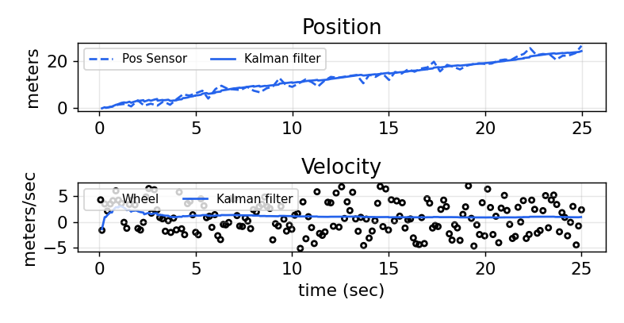
Ball in a Vacuum
- 진공에서 던진 공은 Newton 법칙대로 포물선 이동, 4 차 Runge-Kutta 로 위치를 적분하는 시뮬레이터로 측정 생성
- (0, 15) m 에서 100 m/s, 60° 로 던진 공, 잡음 섞인 측정이 매끄러운 포물선을 그림
- 조건: BallTrajectory2D, dt = 0.25 s, 측정 잡음 [1, 1] m, y < 0 이면 종료
def test_ball_vacuum(noise): y = 15 x = 0 ball = BallTrajectory2D(x0=x, y0=y, theta_deg=60., velocity=100., noise=noise) dt = 0.25 while y >= 0: x, y = ball.step(dt) if y >= 0: plt.scatter(x, y, color='r', marker='.', s=75, alpha=0.5) plt.axis('equal'); test_ball_vacuum([1, 1]) # plot with noise
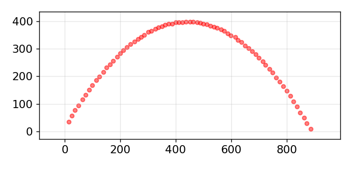
State Variables and State Transition
- 8.11.1 Euler: 매 Δt 동안 속도가 일정하다고 가정, 매 단계 측정이 있어 충분히 정확
- 상태: x 는 등속, y 는 중력으로 가속, 상수인 중력은 제어 입력으로 처리
- 8.11.2 F: g 를 포함하지 않는 등속 F, 중력은 Bu 로 반영
- Runge-Kutta: predict 를 직접 작성, P 는 FPF^T + Q
핵심: 알려진 방식으로 시스템을 바꾸는 힘은 추적할 상태가 아니라 제어 입력
Control Input: Gravity
- 목표: 가 되도록 B, u 설계, 중력은 y 속도만 변화
- 원칙: u 는 실제 제어 입력, 시간은 제어 입력을 상태 변화로 바꾸는 B 의 몫
| B | u | 평가 |
|---|---|---|
| 가능하지만 과함 | ||
| x, y 두 방향의 제어 입력 | ||
| 실제 존재하는 입력만, 이 예제의 선택 | ||
| 결과는 같지만 u 에 시간이 들어가 부적절 |
Design H, R, Q, and Initial Conditions
| Design | 의미 | |
|---|---|---|
| 8.11.4 H | 센서는 공의 위치 (x, y) 만 측정, 속도와 가속도는 측정 불가 | |
| 8.11.5 R | x, y 오차는 서로 독립, 분산 0.5 m^2 | |
| 8.11.6 Q | 진공을 가정하므로 process noise 없음 | |
| 8.11.7 x | 발사 각도 ω 와 속도 v 로 초기 속도 계산 |
구현: ball_kf(x, y, omega, v0, dt, r, q) 가 위 설계로 F, H, B, R, Q, x 를 설정한 KalmanFilter 를 반환
Tracking a Ball in a Vacuum
- ball_kf 로 만든 필터에 시뮬레이터 측정을 넣고 매 단계 update 후 중력 u = -9.8 로 predict, 출력이 포물선을 정확히 추적
- process noise 가 없는 사소한 예, 진공 궤적은 정밀하게 예측 가능해 최소제곱 곡선 맞춤과 같은 결과
- 조건: (0, 1) m 에서 80 m/s, 35°, dt = 0.1 s, 측정 잡음 0.2 m, R = 0.5, Q = 0
dt = 1./10 x, y = 0., 1. theta, v0 = 35., 80. # launch angle, speed g = np.array([[-9.8]]) # gravitational constant ball = BallTrajectory2D(x0=x, y0=y, theta_deg=theta, velocity=v0, noise=[.2, .2]) kf = ball_kf(x, y, theta, v0, dt) xs, ys = [], [] while kf.x[2] > 0: x, y = ball.step(dt) z = np.array([[x, y]]).T kf.update(z) xs.append(kf.x[0]); ys.append(kf.x[2]) kf.predict(u=g) p1 = plt.scatter(x, y, color='r', marker='.', s=75, alpha=0.5) p2, = plt.plot(xs, ys, lw=2) plt.legend([p2, p1], ['Kalman filter', 'Measurements'], scatterpoints=1);
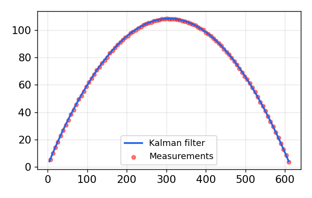
Implementing Air Drag
- 상황: 공기 중의 공은 바람, 항력, 회전의 영향, 카메라 blob detection 으로 위치 측정, 2D 로 단순화
- 항력: 속도의 제곱에 비례하고 속도 반대 방향, 질량으로 나눠 가속도
- B2/m: 풍동 실험 기반의 근사식, 35 m/s 부근에서 급변, SI 단위
- 목적: 진공 모델과 다른 실제적 거동으로 필터를 시험
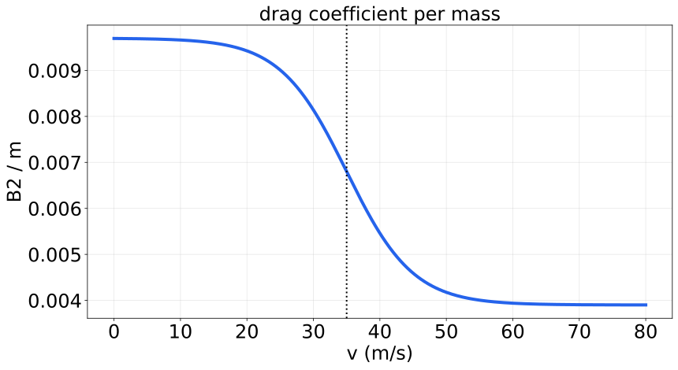
Air Drag and Wind
- Euler 방법으로 항력과 바람을 포함한 공의 궤적을 단계별로 계산(항력이 비선형이라 해석해 없음), 무풍과 4.5 m/s 뒷바람 비교
- 진공에서 약 230 m 날아갈 공이 공기 중에서는 약 120 m, 홈런 타구로 현실적인 거리
- 조건: 초기 속도 49.2 m/s (홈런 타구 속도), 35°, (0, 1) m, dt = 0.1 s, drag_force(v) = v B2/m
v, dt, theta = 49.2, .1, radians(35) # m/s, s, rad def solve(x, y, vel, v_wind, launch_angle): xs, ys = [], [] v_x, v_y = vel*cos(launch_angle), vel*sin(launch_angle) while y >= 0: # Euler equations for x and y x += v_x*dt y += v_y*dt # force due to air drag velocity = sqrt((v_x-v_wind)**2 + v_y**2) F = drag_force(velocity) v_x = v_x - F*(v_x-v_wind)*dt v_y = v_y - 9.8*dt - F*v_y*dt xs.append(x); ys.append(y) return xs, ys x, y = solve(x=0, y=1, vel=v, v_wind=0, launch_angle=theta) plt.scatter(x, y, color='blue', label='no wind') x, y = solve(x=0, y=1, vel=v, v_wind=4.5, launch_angle=theta) plt.scatter(x, y, color='green', marker='v', label='4.5 m/s wind') plt.legend(scatterpoints=1);
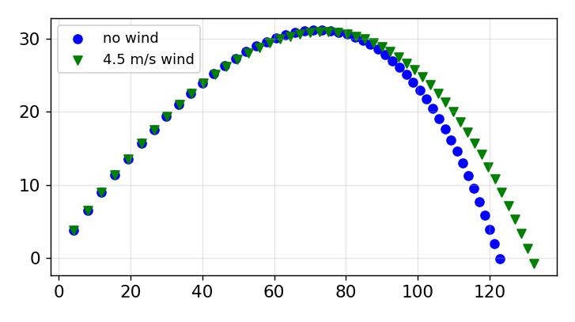
Tracking a Ball in Air
- 항력이 있는 공(BaseballPath)을 진공 모델의 필터(Q = 0)로 추적, 처음엔 측정을 잘 따르지만 점점 발산
- 항력에 의한 감속을 모델이 몰라 공보다 계속 앞서 나감, 가속이 이어지는 한 선형 모델은 따라잡을 수 없음
- 조건: (0, 1) m 에서 50 m/s, 35°, dt = 0.1 s, 측정 잡음 0.3 m, Q = 0, R = 1 과 10 은 측정 잡음의 영향을 보이기 위한 값
x, y, theta, v0, dt = 0, 1., 35., 50., 1/10. g = np.array([[-9.8]]) ball = BaseballPath(x0=x, y0=y, launch_angle_deg=theta, velocity_ms=v0, noise=[.3, .3]) f1 = ball_kf(x, y, theta, v0, dt, r=1.) f2 = ball_kf(x, y, theta, v0, dt, r=10.) xs, ys, xs2, ys2 = [], [], [], [] while f1.x[2] > 0: x, y = ball.update(dt) z = np.array([[x, y]]).T f1.update(z); f2.update(z) xs.append(f1.x[0]); ys.append(f1.x[2]) xs2.append(f2.x[0]); ys2.append(f2.x[2]) f1.predict(u=g); f2.predict(u=g) p1 = plt.scatter(x, y, color='r', marker='.', s=75, alpha=0.5) p2, = plt.plot(xs, ys, lw=2) p3, = plt.plot(xs2, ys2, lw=4) plt.legend([p1, p2, p3], ['Measurements', 'Filter(R=1)', 'Filter(R=10)'], loc='best', scatterpoints=1);
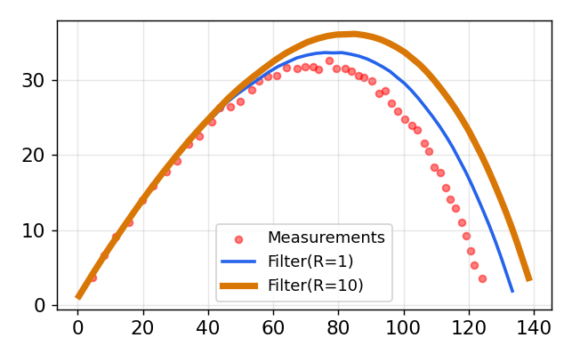
Air Force as Process Noise
- 공기가 공에 가하는 힘을 process noise 로 간주하는 공학적 해법, Q = 0.01 과 Q = 0.1 로 같은 추적 반복
- Q = 0.1 은 약간의 lag 만 남고 측정을 잘 따라감, 다만 이 힘은 Gaussian 이 아니고 계산 가능한 힘이라 최적 해법은 아님
- 조건: R = 1, 측정 잡음 0.3 m, 왼쪽: Q = 0.01, 오른쪽: Q = 0.1
def plot_ball_with_q(q, r=1., noise=0.3): x, y, theta, v0, dt = 0., 1., 35., 50., 1/10. g = np.array([[-9.8]]) ball = BaseballPath(x0=x, y0=y, launch_angle_deg=theta, velocity_ms=v0, noise=[noise, noise]) f1 = ball_kf(x, y, theta, v0, dt, r=r, q=q) xs, ys = [], [] while f1.x[2] > 0: x, y = ball.update(dt) z = np.array([[x, y]]).T f1.update(z) xs.append(f1.x[0]); ys.append(f1.x[2]) f1.predict(u=g) p1 = plt.scatter(x, y, c='r', marker='.', s=75, alpha=0.5) p2, = plt.plot(xs, ys, lw=2, color='b') plt.legend([p1, p2], ['Measurements', 'Kalman filter']) plt.title('Q = {}'.format(q)) plt.subplot(121); plot_ball_with_q(0.01) plt.subplot(122); plot_ball_with_q(0.1)
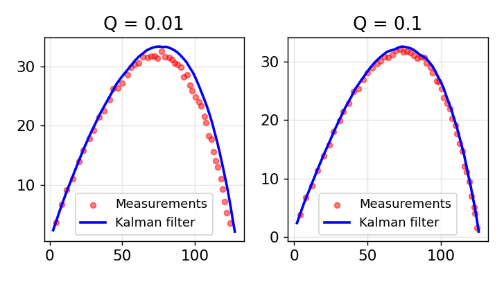
Noisy Measurements
- 같은 방법을 측정 잡음 3 m 의 데이터에 적용, 출력이 매우 나쁨, 측정 비중이 커진 필터가 잡음을 그대로 따라감
- Q, R 을 이론값보다 키워 약한 비선형을 가릴 수는 있지만 준최적, 시험 데이터에만 맞춘 필터는 실제 데이터에서 실패 가능
- 조건: R = 3, 측정 잡음 3 m, 왼쪽: Q = 0.01, 오른쪽: Q = 0.1
plt.subplot(121) plot_ball_with_q(0.01, r=3, noise=3.) plt.subplot(122) plot_ball_with_q(0.1, r=3, noise=3.)
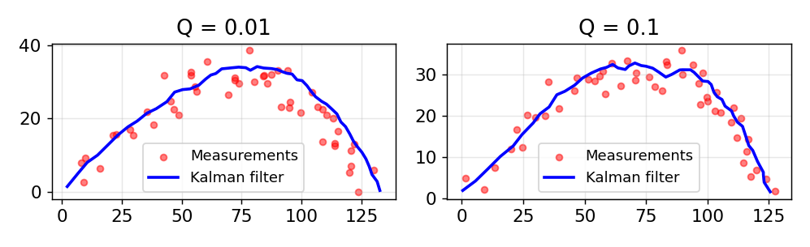
핵심: 비선형 문제에 선형 Kalman filter 를 억지로 적용한 사례, 비선형 필터 기법이 필요한 이유